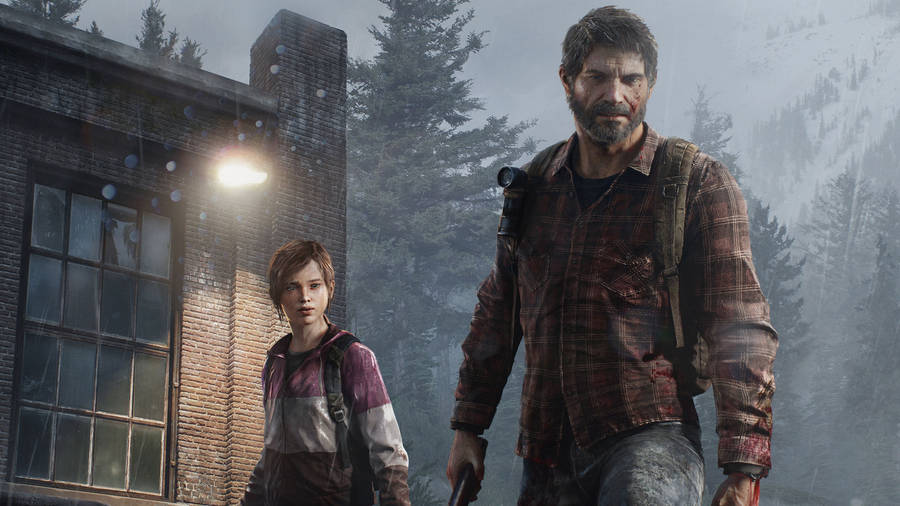

What makes it different
The Last of Us feels believable because it focuses on character relationships more than just the apocalypse. The tone is quiet, heavy, and emotional, which makes the world feel real instead of just scary.
About

The Last of Us feels believable because it focuses on character relationships more than just the apocalypse. The tone is quiet, heavy, and emotional, which makes the world feel real instead of just scary.